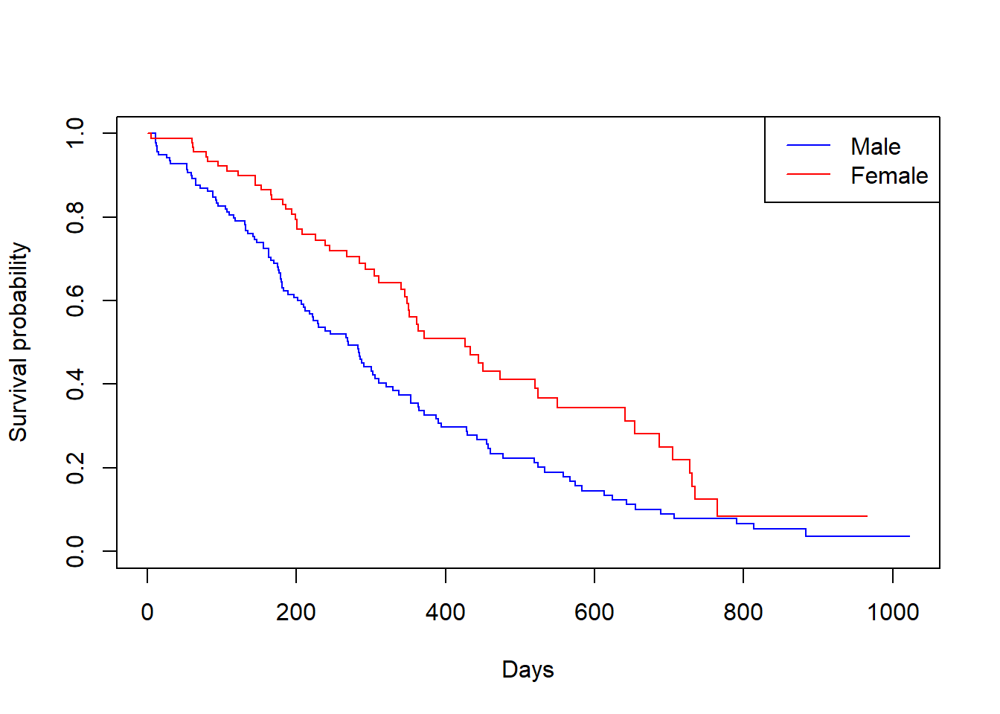

library(survival)
lung2 <- survival::lung %>% as_tibble() %>%
mutate(status_event = (status == 2)) # TRUE when event (death) occurred
# Kaplan-Meier by sex
km_sex <- survfit(Surv(time, status_event) ~ sex, data = lung2)
summary(km_sex)Call: survfit(formula = Surv(time, status_event) ~ sex, data = lung2)
sex=1
time n.risk n.event survival std.err lower 95% CI upper 95% CI
11 138 3 0.9783 0.0124 0.9542 1.000
12 135 1 0.9710 0.0143 0.9434 0.999
13 134 2 0.9565 0.0174 0.9231 0.991
15 132 1 0.9493 0.0187 0.9134 0.987
26 131 1 0.9420 0.0199 0.9038 0.982
30 130 1 0.9348 0.0210 0.8945 0.977
31 129 1 0.9275 0.0221 0.8853 0.972
53 128 2 0.9130 0.0240 0.8672 0.961
54 126 1 0.9058 0.0249 0.8583 0.956
59 125 1 0.8986 0.0257 0.8496 0.950
60 124 1 0.8913 0.0265 0.8409 0.945
65 123 2 0.8768 0.0280 0.8237 0.933
71 121 1 0.8696 0.0287 0.8152 0.928
81 120 1 0.8623 0.0293 0.8067 0.922
88 119 2 0.8478 0.0306 0.7900 0.910
92 117 1 0.8406 0.0312 0.7817 0.904
93 116 1 0.8333 0.0317 0.7734 0.898
95 115 1 0.8261 0.0323 0.7652 0.892
105 114 1 0.8188 0.0328 0.7570 0.886
107 113 1 0.8116 0.0333 0.7489 0.880
110 112 1 0.8043 0.0338 0.7408 0.873
116 111 1 0.7971 0.0342 0.7328 0.867
118 110 1 0.7899 0.0347 0.7247 0.861
131 109 1 0.7826 0.0351 0.7167 0.855
132 108 2 0.7681 0.0359 0.7008 0.842
135 106 1 0.7609 0.0363 0.6929 0.835
142 105 1 0.7536 0.0367 0.6851 0.829
144 104 1 0.7464 0.0370 0.6772 0.823
147 103 1 0.7391 0.0374 0.6694 0.816
156 102 2 0.7246 0.0380 0.6538 0.803
163 100 3 0.7029 0.0389 0.6306 0.783
166 97 1 0.6957 0.0392 0.6230 0.777
170 96 1 0.6884 0.0394 0.6153 0.770
175 94 1 0.6811 0.0397 0.6076 0.763
176 93 1 0.6738 0.0399 0.5999 0.757
177 92 1 0.6664 0.0402 0.5922 0.750
179 91 2 0.6518 0.0406 0.5769 0.736
180 89 1 0.6445 0.0408 0.5693 0.730
181 88 2 0.6298 0.0412 0.5541 0.716
183 86 1 0.6225 0.0413 0.5466 0.709
189 83 1 0.6150 0.0415 0.5388 0.702
197 80 1 0.6073 0.0417 0.5309 0.695
202 78 1 0.5995 0.0419 0.5228 0.687
207 77 1 0.5917 0.0420 0.5148 0.680
210 76 1 0.5839 0.0422 0.5068 0.673
212 75 1 0.5762 0.0424 0.4988 0.665
218 74 1 0.5684 0.0425 0.4909 0.658
222 72 1 0.5605 0.0426 0.4829 0.651
223 70 1 0.5525 0.0428 0.4747 0.643
229 67 1 0.5442 0.0429 0.4663 0.635
230 66 1 0.5360 0.0431 0.4579 0.627
239 64 1 0.5276 0.0432 0.4494 0.619
246 63 1 0.5192 0.0433 0.4409 0.611
267 61 1 0.5107 0.0434 0.4323 0.603
269 60 1 0.5022 0.0435 0.4238 0.595
270 59 1 0.4937 0.0436 0.4152 0.587
283 57 1 0.4850 0.0437 0.4065 0.579
284 56 1 0.4764 0.0438 0.3979 0.570
285 54 1 0.4676 0.0438 0.3891 0.562
286 53 1 0.4587 0.0439 0.3803 0.553
288 52 1 0.4499 0.0439 0.3716 0.545
291 51 1 0.4411 0.0439 0.3629 0.536
301 48 1 0.4319 0.0440 0.3538 0.527
303 46 1 0.4225 0.0440 0.3445 0.518
306 44 1 0.4129 0.0440 0.3350 0.509
310 43 1 0.4033 0.0441 0.3256 0.500
320 42 1 0.3937 0.0440 0.3162 0.490
329 41 1 0.3841 0.0440 0.3069 0.481
337 40 1 0.3745 0.0439 0.2976 0.471
353 39 2 0.3553 0.0437 0.2791 0.452
363 37 1 0.3457 0.0436 0.2700 0.443
364 36 1 0.3361 0.0434 0.2609 0.433
371 35 1 0.3265 0.0432 0.2519 0.423
387 34 1 0.3169 0.0430 0.2429 0.413
390 33 1 0.3073 0.0428 0.2339 0.404
394 32 1 0.2977 0.0425 0.2250 0.394
428 29 1 0.2874 0.0423 0.2155 0.383
429 28 1 0.2771 0.0420 0.2060 0.373
442 27 1 0.2669 0.0417 0.1965 0.362
455 25 1 0.2562 0.0413 0.1868 0.351
457 24 1 0.2455 0.0410 0.1770 0.341
460 22 1 0.2344 0.0406 0.1669 0.329
477 21 1 0.2232 0.0402 0.1569 0.318
519 20 1 0.2121 0.0397 0.1469 0.306
524 19 1 0.2009 0.0391 0.1371 0.294
533 18 1 0.1897 0.0385 0.1275 0.282
558 17 1 0.1786 0.0378 0.1179 0.270
567 16 1 0.1674 0.0371 0.1085 0.258
574 15 1 0.1562 0.0362 0.0992 0.246
583 14 1 0.1451 0.0353 0.0900 0.234
613 13 1 0.1339 0.0343 0.0810 0.221
624 12 1 0.1228 0.0332 0.0722 0.209
643 11 1 0.1116 0.0320 0.0636 0.196
655 10 1 0.1004 0.0307 0.0552 0.183
689 9 1 0.0893 0.0293 0.0470 0.170
707 8 1 0.0781 0.0276 0.0390 0.156
791 7 1 0.0670 0.0259 0.0314 0.143
814 5 1 0.0536 0.0239 0.0223 0.128
883 3 1 0.0357 0.0216 0.0109 0.117
sex=2
time n.risk n.event survival std.err lower 95% CI upper 95% CI
5 90 1 0.9889 0.0110 0.9675 1.000
60 89 1 0.9778 0.0155 0.9478 1.000
61 88 1 0.9667 0.0189 0.9303 1.000
62 87 1 0.9556 0.0217 0.9139 0.999
79 86 1 0.9444 0.0241 0.8983 0.993
81 85 1 0.9333 0.0263 0.8832 0.986
95 83 1 0.9221 0.0283 0.8683 0.979
107 81 1 0.9107 0.0301 0.8535 0.972
122 80 1 0.8993 0.0318 0.8390 0.964
145 79 2 0.8766 0.0349 0.8108 0.948
153 77 1 0.8652 0.0362 0.7970 0.939
166 76 1 0.8538 0.0375 0.7834 0.931
167 75 1 0.8424 0.0387 0.7699 0.922
182 71 1 0.8305 0.0399 0.7559 0.913
186 70 1 0.8187 0.0411 0.7420 0.903
194 68 1 0.8066 0.0422 0.7280 0.894
199 67 1 0.7946 0.0432 0.7142 0.884
201 66 2 0.7705 0.0452 0.6869 0.864
208 62 1 0.7581 0.0461 0.6729 0.854
226 59 1 0.7452 0.0471 0.6584 0.843
239 57 1 0.7322 0.0480 0.6438 0.833
245 54 1 0.7186 0.0490 0.6287 0.821
268 51 1 0.7045 0.0501 0.6129 0.810
285 47 1 0.6895 0.0512 0.5962 0.798
293 45 1 0.6742 0.0523 0.5791 0.785
305 43 1 0.6585 0.0534 0.5618 0.772
310 42 1 0.6428 0.0544 0.5447 0.759
340 39 1 0.6264 0.0554 0.5267 0.745
345 38 1 0.6099 0.0563 0.5089 0.731
348 37 1 0.5934 0.0572 0.4913 0.717
350 36 1 0.5769 0.0579 0.4739 0.702
351 35 1 0.5604 0.0586 0.4566 0.688
361 33 1 0.5434 0.0592 0.4390 0.673
363 32 1 0.5265 0.0597 0.4215 0.658
371 30 1 0.5089 0.0603 0.4035 0.642
426 26 1 0.4893 0.0610 0.3832 0.625
433 25 1 0.4698 0.0617 0.3632 0.608
444 24 1 0.4502 0.0621 0.3435 0.590
450 23 1 0.4306 0.0624 0.3241 0.572
473 22 1 0.4110 0.0626 0.3050 0.554
520 19 1 0.3894 0.0629 0.2837 0.534
524 18 1 0.3678 0.0630 0.2628 0.515
550 15 1 0.3433 0.0634 0.2390 0.493
641 11 1 0.3121 0.0649 0.2076 0.469
654 10 1 0.2808 0.0655 0.1778 0.443
687 9 1 0.2496 0.0652 0.1496 0.417
705 8 1 0.2184 0.0641 0.1229 0.388
728 7 1 0.1872 0.0621 0.0978 0.359
731 6 1 0.1560 0.0590 0.0743 0.328
735 5 1 0.1248 0.0549 0.0527 0.295
765 3 1 0.0832 0.0499 0.0257 0.270# Plot the KM curves (base plot for simplicity)
plot(km_sex, col = c("blue", "red"), xlab = "Days", ylab = "Survival probability")
legend("topright", legend = c("Male","Female"), col = c("blue","red"), lty = 1)
# Log-rank test
survdiff(Surv(time, status_event) ~ sex, data = lung2)Call:
survdiff(formula = Surv(time, status_event) ~ sex, data = lung2)
N Observed Expected (O-E)^2/E (O-E)^2/V
sex=1 138 112 91.6 4.55 10.3
sex=2 90 53 73.4 5.68 10.3
Chisq= 10.3 on 1 degrees of freedom, p= 0.001